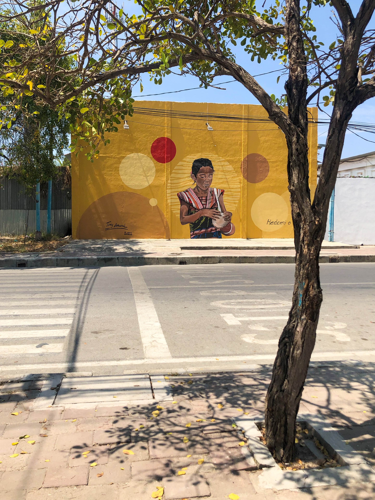
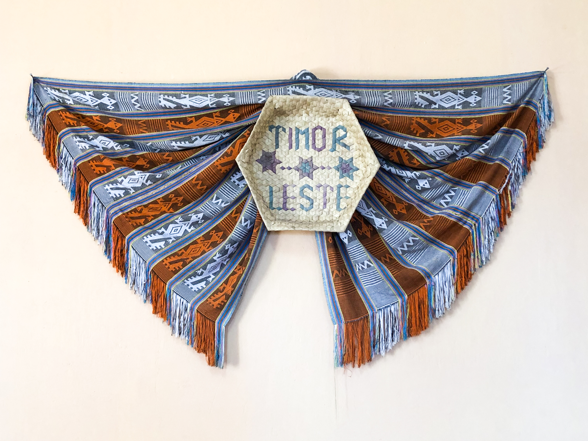
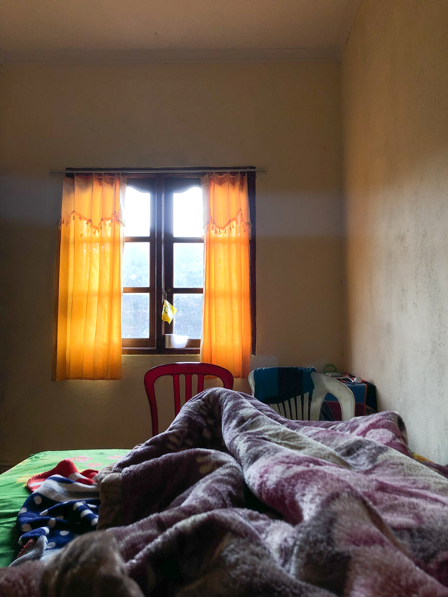
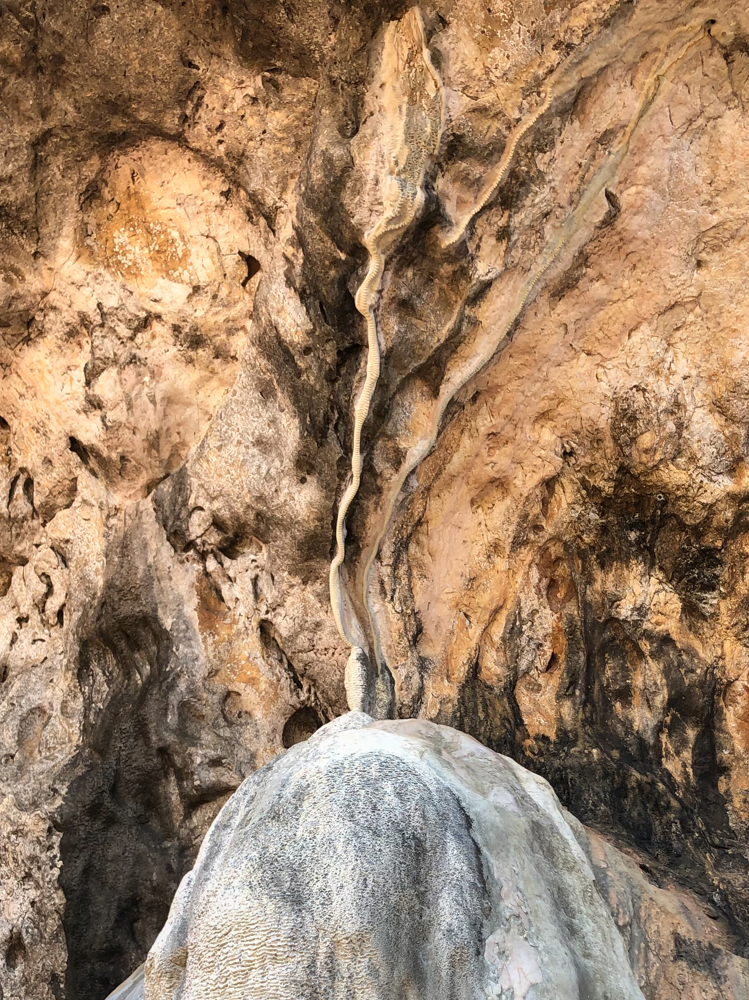
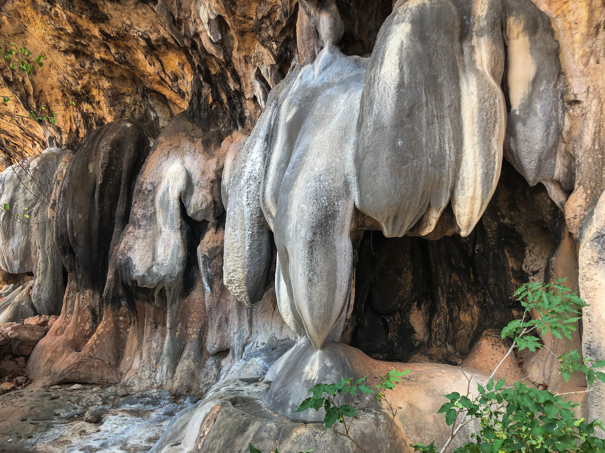
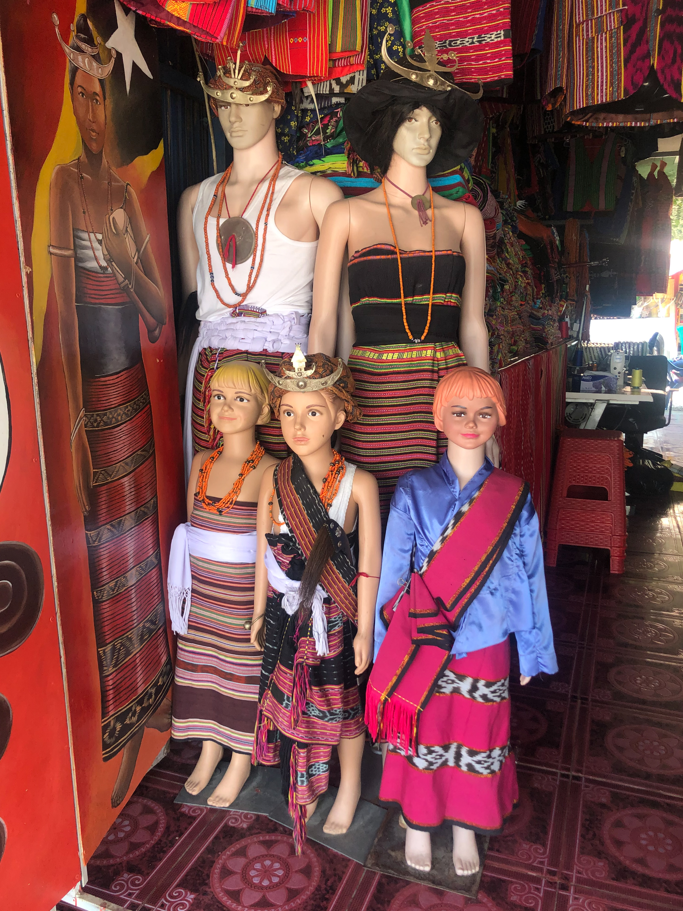
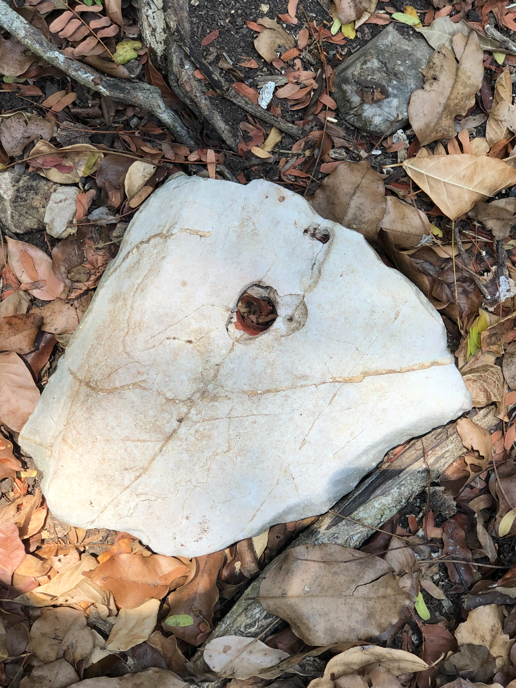

Стоимость: от $10,000
Базовая стоимость экспедиции (без учета авиабилетов и страховки).
VIP-Опция: Возможность организации закрытой встречи с сыном Президента (при участии Патрика). Требует согласования, стоимость рассчитывается индивидуально.
ДЕНЬ 01
Столица, Кофе и Наследие
Прилет в Дили, чек-ин в Novo Turismo Resort. Погружение начинается со столицы: португальская архитектура, покупка традиционного текстиля (Tais) и дегустация премиального горного кофе.
Мы посетим фабрику масел Ascension Oil (Kukui nut oil), а также (по желанию) отправимся в горы к древним природным святилищам, где время буквально остановилось.


ДЕНЬ 02
Атауро: Синие Киты и Garden Reef
Фрахт частной лодки и выход в пролив Омбай-Ветар. Это один из главных путей миграции огромных Синих Китов. Наблюдение за гигантами в океане.
Прибытие на остров Атауро. Снорклинг на знаменитом Garden Reef — рифе с высочайшим биоразнообразием в мире.
ДЕНЬ 03
Горы: Seloi Kraik, Маубиссе и Докомали
Выезд на внедорожнике на юг. По пути мы заезжаем в живописную горную деревню Seloi Kraik (округ Айлеу) с ее безмятежным озером, зелеными рисовыми террасами и аутентичным укладом жизни. Далее — посещение традиционных кофейных ферм Маубиссе.
Кульминация дня — живописный треккинг через джунгли к водопаду Dokomali (Bee Tudak). Мощь падающей воды и абсолютная первозданная природа.


ДЕНЬ 04
Курс на Восток: Баукау
Мы начинаем движение на восток острова. Чтобы не терпеть 9-часовую тряску за один день, мы прибываем в старинный колониальный город Баукау.
Посещение исторической природной купели с лазурной водой в слоистых скалах. Ночевка в атмосферной крепости Pousada de Baucau.
ДЕНЬ 05
Край Света: Лоспалос и Тутуала
Продолжение пути на крайний восток. Дорога становится более дикой, асфальт сменяется грунтовками — вот где Land Cruiser покажет себя.
Прибытие в район Тутуала (Национальный парк Нино Конис Сантана). Заселение в лучший из доступных эко-лоджей у самого края земли.
ДЕНЬ 06
Необитаемый Жако
Переправа на местных рыбацких лодках на священный (Lulik) необитаемый остров Жако.
Белоснежный коралловый песок, бирюзовый океан и дикие олени, выходящие к воде. Тотальная изоляция и океаническая тишина. Свободное время, купание, расслабление.


ДЕНЬ 07
Uma Lulik и Возвращение
Посещение священных домов на сваях (Uma Lulik) племен Фаталуку. Знакомство с анимистическими верованиями аборигенов, передача традиционных подношений (ткани, бетель) старейшинам.
Начало неспешного обратного переезда в сторону Дили с ночевкой в комфортной точке маршрута.


ДЕНЬ 08
Интеграция и Вылет
Возвращение в столицу. Утренняя интеграция впечатлений. Покупка лучшего премиального кофе с собой. Трансфер в аэропорт и вылет домой.